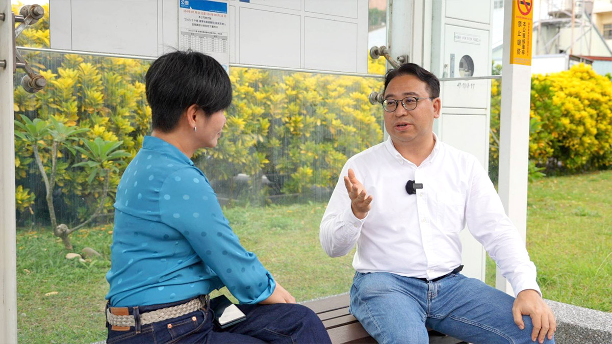
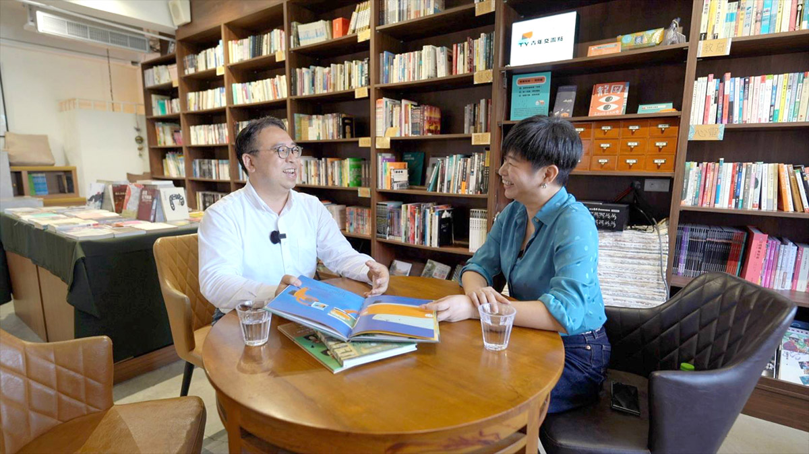
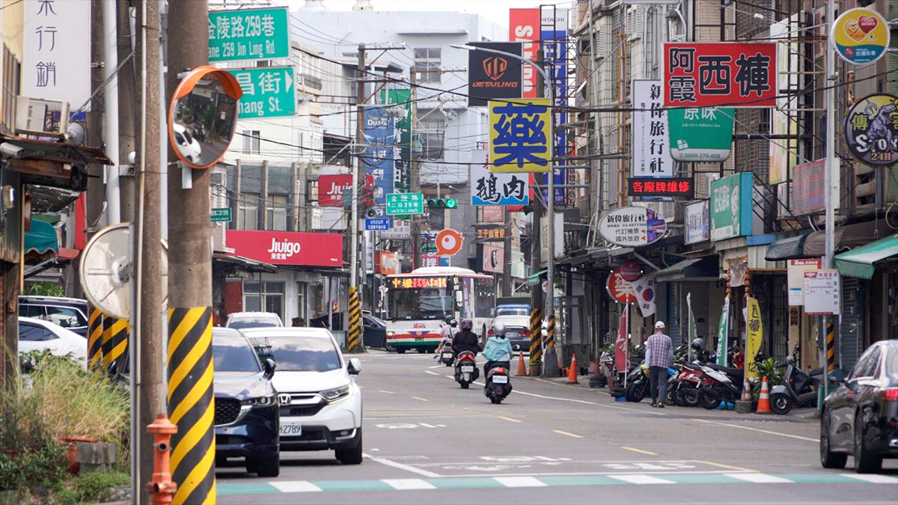

他的城市考題
黃世杰
熟悉制度的法律人，能找回「消失的4分鐘」嗎？
◎ 報導／呂佳頴
◎ 攝影／柯勝雄
他的城市考題
◎ 報導／呂佳頴
◎ 攝影／柯勝雄
2026年9月
「苔蘚視角」獨立書店、公車站@桃園平鎮
「我太太被公車晃點過後，開始學開車的。」說這話的是黃世杰，他做過法務部次長、立委，也在桃園市府服務過，同時，他也是一個三歲半小男孩的爸爸。
只要家裡有孩子的大人都會懂！上班、下班、買東西、出門玩，到底要不要搭公車？最後都會繞回同一個問題：孩子怎麼辦？
黃世杰原本是雙薪家庭，但他現在投入桃園市長選舉，暫時沒有薪水，太太不僅要上班，接送小孩的任務也更多落在她的身上。他正在育兒進行式，因此面對育兒的苦與樂，不是拿來說說而已。

▲ 桃園公車被叫「幽靈公車」，黃世杰說太太因此改學開車。（圖／柯勝雄攝）
桃園這幾年有很多年輕人口移入，孩子多了，家庭也多了。這次，黃世杰談參選，沒有先從「大口號」開始，而是從一個家庭每天都會遇到的為難開始。
那天的採訪，約在一家位於桃園平鎮的獨立書店，別誤會要賣弄文青，實在是黃世杰行程空檔，跟我說他正要去買書，我們才決定跟著他去了書店。我們一進書店，就看到黃世杰蹲在角落。我走過去跟著蹲下來，問他在幹嘛？他說，「最近太忙，比較少念繪本給兒子聽。」原來家裡的書都讀過了，他趁行程空檔來挑幾本。
▲ 幫孩子挑童書，黃世杰選的是《橘色的馬》，而不是《如果我是市長》。（圖／柯勝雄攝）
我問為什麼要蹲在地上？他答：因為小朋友的書都放在比較低的架子上，孩子才能自己選。這時他已挑了本《橘色的馬》童書，翻開這本書，談的是互動、情緒、朋友和兄弟。
三歲半的孩子正在學說話，也學著理解自己和世界。他說，「這本《橘色的馬》很適合。」但我看到的不是這本，而是旁邊那本《如果我是市長》。我捉狹地問：「不買嗎？」；他笑回：「這不是妳準備的吧？」
「當然不是！」我回話。不過真的很巧。一個正在選市長的人在書店裡遇到一本叫《如果我是市長》的童書。很像上天硬塞進來的哏，但他沒有順著這個哏，繼續往選舉講。因為孩子現在需要的是《橘色的馬》。不是爸爸要選舉，就要讀《如果我是市長》。
這個選擇很小，卻很「黃世杰」，他沒有先把孩子拉進自己的政治敘事裡，他先問的是：孩子現在需要什麼？
如果小孩就在現場呢？我突然靈機一動想著，我接著問：「假設我現在是你的小孩，爸爸念繪本給我聽。」黃世杰竟接住了！打開《橘色的馬》童書，但他沒有照著字念，他指著圖問孩子（也就是我）：「這是什麼顏色？」

▲ 黃世杰趁空檔到書店補繪本，準備晨起時的爸爸說故事時間。（圖／柯勝雄攝）
書中看到城市，他會帶孩子看路上的車，有公車、公車站、煙囪、工廠、大樓。當故事進展到橘色的馬想找失散多年的兄弟，他沒有急著把故事往下推，而是停下來，把情境說給孩子聽。
這個細節雖小卻很重要，這不只是看一個爸爸怎麼陪孩子念書，也看見他看事情的方法。他不是只看字，他會看圖、看情境、看人在那個情境裡，可能會怎麼反應。
然而孩子聽故事，不一定跟著故事主線走。「可能看到公園，就想去玩水。」他說。我又立刻變身小孩：「我要出去玩。」他試著把故事拉回來，又被我打斷。最後他苦笑：「我家小孩還不會這樣。」
這時，我們都笑出聲了。只是他是苦笑；我是有點整到他的笑。「別只把他當孩子，要尊重。」他說，要接住小孩的情緒，話才聽得進去。這話很溫柔，但選舉可不溫柔。我問：如果想當市長，是不是也要接住很多人的情緒？他說，到了市府、市政層級，就不只是情緒而已，還必須落實到滿足大家的需要。
話鋒一轉，他談到托育。不是那種口號式的「支持年輕家庭」，而是從出生前，一路講到父母每天面對的壓力。去哪裡托育？離家和公司多遠？多少錢？誰接送？每一個問號都是壓力，一層一層疊上去，爸媽哪還喘得過氣？
「透明的托育地圖，很重要。」他說的不是多發一點錢，而是把資訊整理出來 : 哪裡有空位？離家多遠？價格多少？不用找關係，也不用到處拜託。對年輕父母來說，智慧絕非城市看起來多科技，而是當他們需要托育時，不必像闖關一樣，靠運氣、靠人脈、靠到處問。
▲ 兒子三歲半，黃世杰享受跟兒子的親子時間。（圖／柯勝雄攝）
「托育是哪個局處的業務？是社會局，還是衛生局？」他沒有直接回答。反倒先提產業園區、機場、企業托育、建管、消防、幼保人力。一家企業想做托育，不是空出一個空間就好，法令、安全、人力條件，都得接上。
「可以整合幾家一起做。」他說，市府要有人接住，然後做跨局處整合。把本來散在不同單位裡的資訊，整理成市民和企業都能用得到的服務，是他口中的市政。也就是，黃世杰談智慧城市，不是從螢幕、系統、獎項開始。而是從一個家庭問：孩子誰接？資訊在哪？制度有沒有幫上忙？
黃世杰學法律，輔修社會科學。對他來說，法律不是只寫在紙上。重要的是，法律在社會裡怎麼運作，制度一旦被訂出來，會遇到什麼阻力？能不能有效實現？會不會看起來有制度，實際上沒有人用得到？
外界有人質疑他不熟市政，黃世杰回應說，桃園升格為直轄市時，他就在桃園市府服務。那不是把「縣」改成「市」就完成，很多規章都需要重新檢視、討論。「當時和各個局處的公務員開了很多會，痛點在哪都知道。」一個政策從法制、行政實務到社會需求之間，得層層接上去。只要哪裡斷掉，就會骨牌效應，然後全倒。
這跟他念《橘色的馬》很像，不是只念字。他看法律，也不是只看條文，而是看人怎麼用、制度怎麼動，最後又怎麼影響人們的生活。
訪問過程中，他始終把笑掛在臉上。我問：「開會溝通，（你）都這樣笑笑的？」以前在立法院當召委主持會議時，有媒體朋友跟他說：「你都笑笑的，講一些很恐怖的話。」
他說自己就是不斷溝通，直到大家都覺得這樣做最好，推動才有力道。如果是被逼著做，未必會好好執行。他習慣把不同部門、不同角度的人，拉到同一張桌上，讓每個人都調整一下，最後，朝同一個目標走。這是他的優點，也是他的考題，因為市政要溝通，但市政也需要決斷。
離開書店後，我們走到對面的公車站。黃世杰說，桃園這十年成長很多。但城市長大後，痛點也會跟著被放大。其中「交通」就是最明顯的一個，桃園第一條捷運還沒完工，那公車路網密不密？順不順？準不準？
黃世杰說，太太也曾是公車族。但幾次「等無車」後，就去學開車。不然上班遲到，接送小孩也趕不及，那會天天都心情不美麗。什麼叫「等無車」？不是單純車沒來。是電子看板上寫著：四分鐘後到站。等著等著，那四分鐘不見了。公車真的是不見，不僅是延後幾分鐘到喔。
我詫異地問為什麼？他說，桃園人管這叫「幽靈公車」。司機不足、資訊沒有精準串接都是原因。一個不斷長大的城市，路網得重新思考，不能只思考載客量，讓路線又長又繞，把市民的時間耗在等待裡。捷運還沒完全建起來，公車路網就得調整改「幹線化」。不然，桃園的交通會永遠好不起來。

▲ 桃園公車班次不時有脫班、誤點狀況，是不少桃園公車族的痛點。（圖／柯勝雄攝）
這幾年的桃園被叫做智慧城市，也拿了不少獎。但怎麼會出現「幽靈公車」呢？這不是吐槽，是檢驗。智慧不該只是系統和獎項；智慧應該回到人身上，解決每天會遇到的麻煩，很多事不能只看一條線，要看整個系統；不能只看局處分工，要看整個生活圈。托育、公車系統都是這樣的。
桃園市長大了，人口、交通、托育、產業、舊城、新開發區，都匯聚成「一鍋粥」。就看主事者的輕重緩急。黃世杰還是笑著說：「把那消失的四分鐘找回來，很重要。」
這個答案的確比一本《如果我是市長》更重要。因為桃園要問的，不是誰最會說自己想當市長，而是誰能把市民日常裡那些卡住、斷掉、不透明、等不到的地方，一個一個接回來。
「熟悉制度」是黃世杰的優勢，但制度更新，不是只把資訊整理好，還要有速度和決斷，才能讓龐大的市府真的動起來。所以，黃世杰的城市考題，不是他有沒有讀過《如果我是市長》。桃園要看的，不只是誰會談智慧城市，更是誰能讓智慧城市，真的回到市民每天的生活裡。

看懂產業布局的人，能不能看見每一種人的生活？

地方跑得久的人，能不能跑出城市方向？

給答案可以很快，城市治理什麼都能馬上辦嗎？

從競爭中突圍的人，能不能讓不同地方、派系與世代重新走在一起？

直率的真實，能轉換成市民的治理信任嗎？

一路把每一棒跑好的人，能不能跑出自己的路線？

習慣把答案整理清楚的人，能面對沒有標準答案的台北嗎？

看見缺口的人，能從台北的各種「可是」裡找到方向嗎？

會維修城市的人，能想像「城市」嗎？

跑遍新北的人，能不能把腳印走成方向？

擅長管理複雜系統的人，能讓快速長大的桃園產生共同方向嗎？
新聞部
副總經理 王結玲
議題研究中心／呂佳頴
採訪中心攝影組／柯勝雄
網路新聞中心／楊致中・談雍雍・吳家瑜
數位事業部
內容策展組／廖玉貞・彭嘉儀・林佳瑤・李佳綺
© TVBS Media Inc. All Rights Reserved.｜聯利媒體股份有限公司